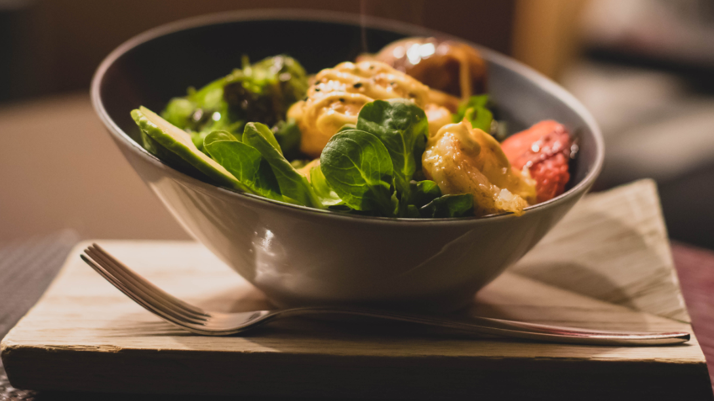
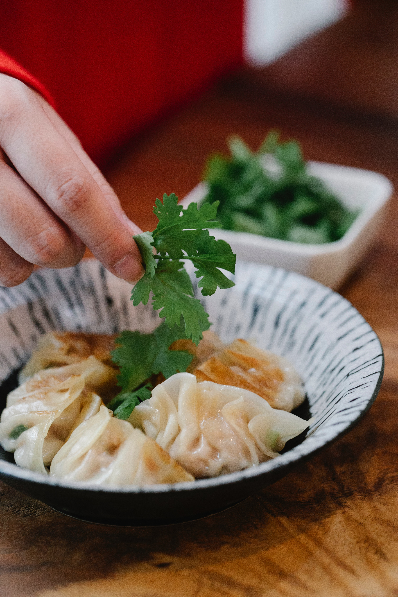
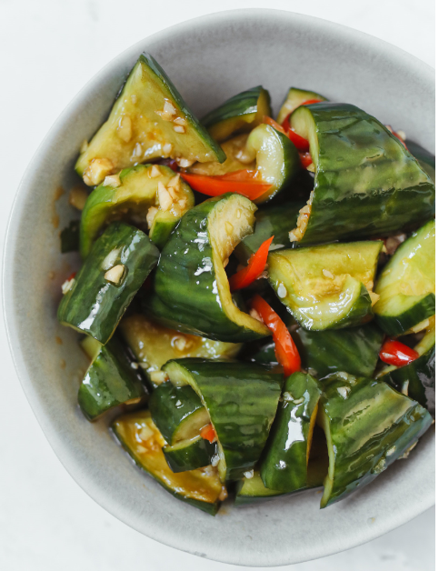
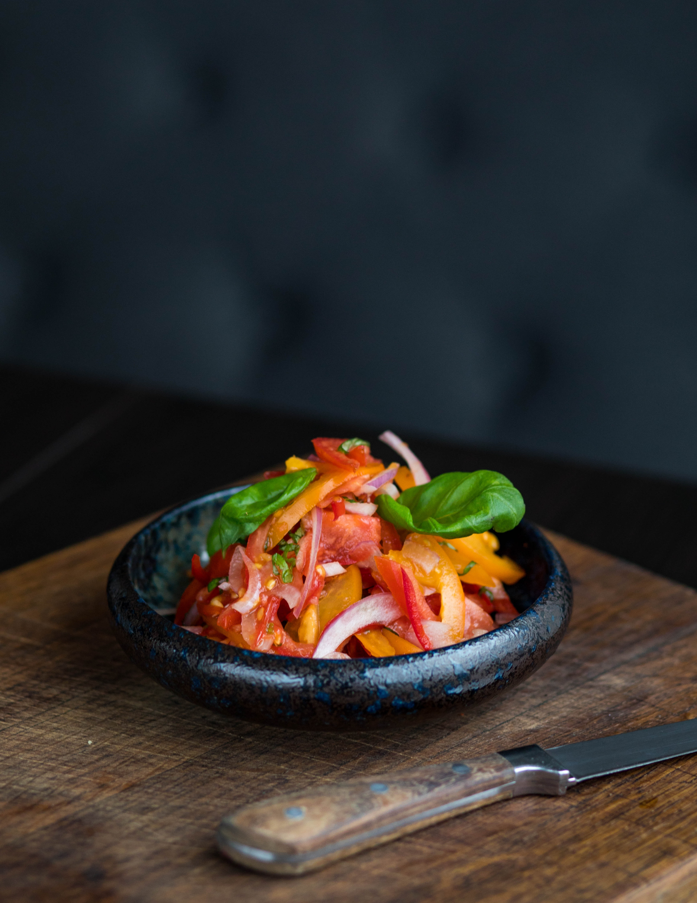

| Shrimp $8.5 | Pork Snacke $7.2 | Steam Egg $6.5 | Dumpling $7.2 |
|---|---|---|---|
|  |
|
|
 |
| Chinese Salad $6.0 | Cooked vegetable &6.5 | Cucumber &6.0 | Salad &7.0 |
|
|
|
 |  |

Thai Shrimp Mango Salad (Yam Mamuang Goong Sod) is a light refreshing Asian salad made with julienned “green mango”, fresh herbs, jumbo shrimp and tossed with our spicy Thai Prik Nam Pla Sauce.

I understand that pig ear may sound like a wired ingredient to many of you. However it is the favorite ingredient for many Chinese people. Pig ear tastes really great due to the gristle. Usually it is either boiled directly or stewed and then served as cold dish. Another famous representative pig ear recipe is stewed pig ear from Shanghai.
This unique style of poaching creates a unique texture, that is gentle on the stomach. Other Asian countries have their own variations of this dish. Feel free to experiment with various seasonings and toppings!
Chinese dumplings (Jiaozi, 饺子) are stuffed parcels made of unleavened dough and savoury fillings consisting of minced ingredients like meat, egg, tofu, or vegetables. They can be boiled, pan-fried or steamed.